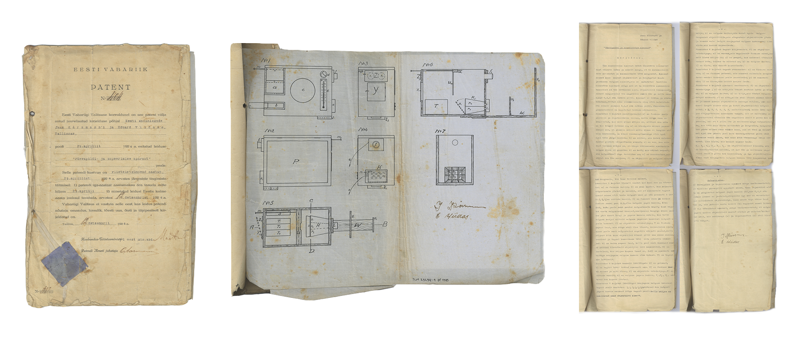

EXPLORE THE HISTORICAL CAMERAS
1880’s
×
Berger’s travel camera
A similar camera was probably used for city views by the most famous photographer of old Reval (former name of Tallinn) - Charles Borchardt (1834-1892)
Museum of Photography TLM KF 364

1 - bellows | 2 - lens | 3 - matte glass | 4 - aperture wheel | 5 - lens plate screw | 6 - tripod screw hole
1920's
×
Instant photo camera
A camera patented by Jaan Ennula

1 - light-proof sleeve | 2 - reproduction support | 3 - opening for the lens | 4 - viewing window | 5 - focusing spar | 6 - matte glass
1960's
×
Peegelkaamera NIKON F
Peeter Tooming (1939-1997) used this camera for his art of photography
Museum of Photography, TLM KF 775

1 - shutter release | 2 - removable pentaprism (mirror system) | 3 - selftimer | 4 - film rewind knob | 5 - film winding knob | 6 - lens | 7 - tripod screw hole | 8 - focusing wheel | 9 - viewfinder
×
Patent and drawings of Jaan Ennula’s instant camera
Patent of the street photographers Jaan Kärsmann (alias Ennula) ja Eduard Viidas for their photographing and copying apparatus with its description and drawings. April 24th, 1924
Museum of Photography, TLM Df 1989
